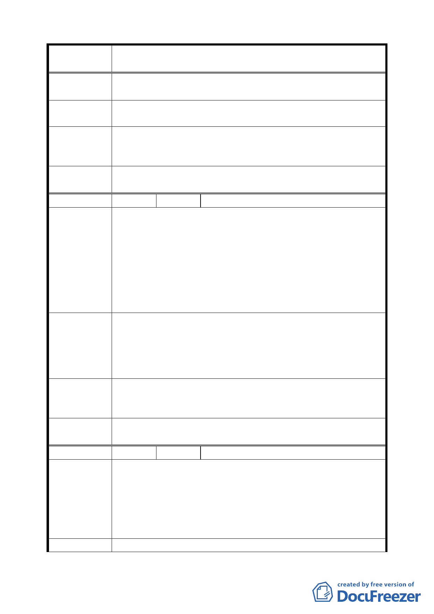

案 名 臺北市文山區都市計畫通盤檢討（細部計畫）案
陳 情 理 由 建議位置：辛亥路七段。
（ 木 柵 ） 建議理由：（空白）。
建議辦法
請將辛亥路七段，自木新路寶橋路內之景美溪擋土牆，改建
為沿溪佈道與寶橋另邊相連成為小型公園。
專案小組
審 查 結 論 同編號 13。
（94.7.4）
委員會議
決議
同編號 13。
編 號 １５ 陳情人 劉雲昌、陳文生里長（09430082800）
建議位置：實踐段三小段 136 至 143、281 至 310 地號（木新
路三段 334 巷 1-19 二弄、1-18 四弄、1-26 號）
建議理由：
陳 情 理 由 為地方發展起見，以及人命財產之確保，該段三小段地上物
（ 木 柵 ） 24 平房，大半無建照。況且住宅四面寨圍著，巷道狹隘，南
北兩端堵塞，如果一家起火，影響四周樓房和學校等，人命
財產威脅。
應優先解決該段計畫。
該段平房建設於民國 55 年間至今 30 有 9 年歷久，民國 65
年間營建富祥新城已有計畫道路，路基從辛亥路七段 84 巷
建 議 辦 法 32 弄至木新路三段 352 巷道接至樟新街，市民希望早日完
成，解決人命財產安全和提高生活。
建議補償拆除戶從區域內收益費付 1/5，餘政府負擔。
專案小組
審查結論
（94.7.4）
本陳情意見並未涉及都市計畫變更議題，屬於拆遷補償事
宜，移請市府相關單位辦理。
委員會議
決議
依專案小組審查結論辦理。
編 號 １６ 陳情人 劉宗勳里長（09430074500）
建議位置：公訓段三小段 163-1、163、164 地號（興隆路三
段 207 巷）。
陳 情 理 由 建議理由：該地段為軍方用地，共有 163、163-1、163-2、
（ 細 木 2 ） 163-3、163-4、163-5、163-6 及 161-4、164 九筆地號，現新
計畫變更 163、163-1、164 三個地號為公園用地，其餘六筆
地號為何不一起變更？
建 議 辦 法 請一併將該 9 個地號變更為公園用地。
三五